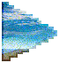
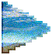

WELCOME!
What is this?
Our community webring is dedicated to the genre of Weirdcore. This eclectic and quirky style of music and art is
characterized by its unconventional, eclectic, and often bizarre qualities. If you're a fan of the strange and
unusual,
this is the webring for you!
A webring is a network of websites linked together in a circular structure, creating a collective community with a
shared interest. Webrings were popular in the early days of the internet as a way for people to navigate and
discover
related websites.
Joining instructions: Here
Our webring is a platform for fans of weirdcore to come together and explore the genre in all its weird and
wonderful
forms. Whether you're a musician, artist, or just a lover of all things odd, our webring provides a space for you to
connect with like-minded individuals and discover new and exciting expressions of the genre. Join us and embrace the
weird!
If the ring is broken, please
submit an error report on GitHub! Members (4)